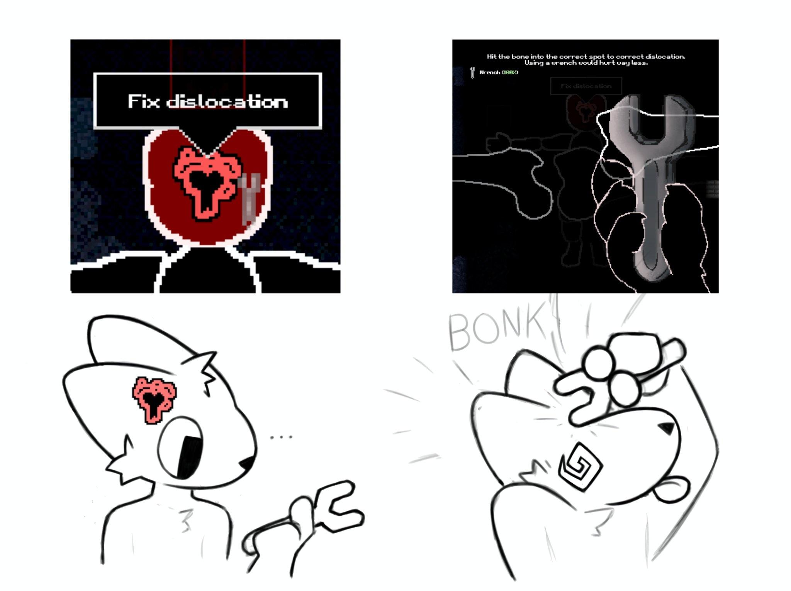
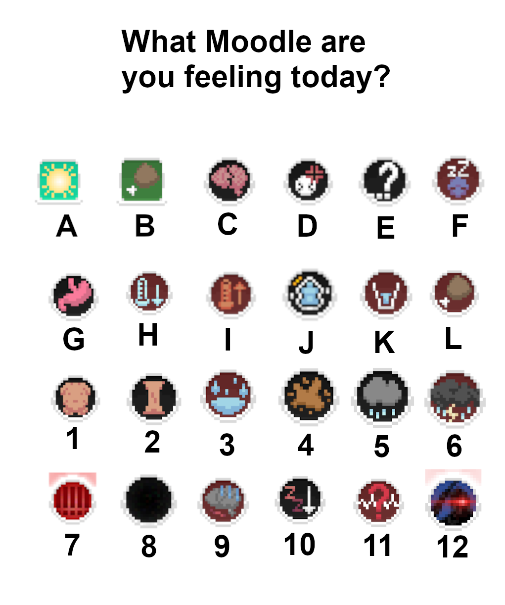

Medical Hub: Injury & Treatment Database
Reference guide for managing injuries and status effects.
Injury Status Guide
Injurys can vary from case to case but the most important thing is knowing what to fix first, your heart and brain are the most important. After that it would be bleeding as you should never go below 3 - 2.5L of blood ever. Then anticeptic would be next as you dont want an infection to pop up while fixing other things. After that you can do things like remove shrapnel, you can bandage over shrapnel to reduce how much you bleed while slowly pulling the peices out of your body. dislocations and broken bones are the absolute last as they dont cause any life threatening issues (in most cases)
Understanding Dislocation Mechanics
There are many different ways of getting hurt so self preservation is the best strategy in this game. No falling head first on metal!

Status Moods Reference
There are many moodles to determine the health of your Expie. Paying attention to them all can keep you alive a lot longer. Them more information you know the better.
